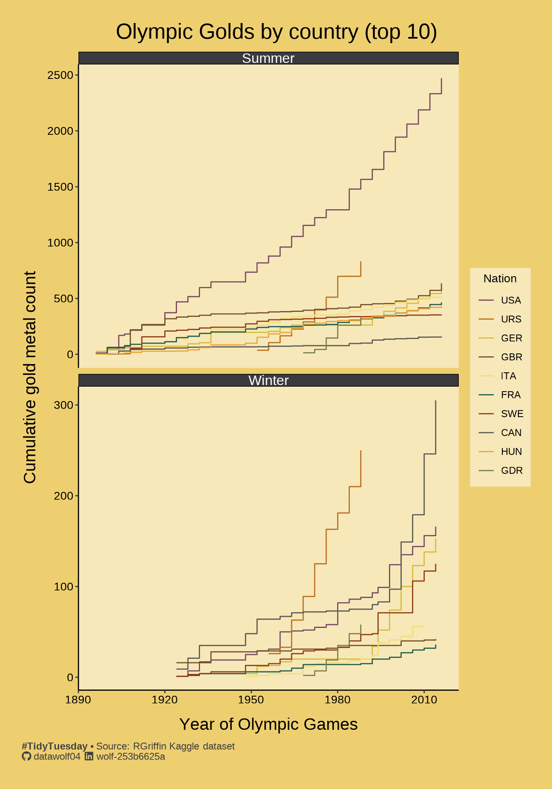

library(tidyverse)
library(ggtext)
library(showtext)
library(janitor)
library(ggdist)
library(ggrepel)
library(scales)
library(paletteer)
library(gt)
load('olympicMedalResults.RData')This week we’re exploring Olympics data!
The data this week comes from the RGriffin Kaggle dataset: 120 years of Olympic history: athletes and results, basic bio data on athletes and medal results from Athens 1896 to Rio 2016.
Data in this dataset:
First, I am planning on analyzing the summer and winter olympics separately. Furthermore, it occurs to me that the year in this dataset should be treated as a factor variable, rather than a numeric variable. This will help if (for example) the olympics were skipped or postponed, and it will definitely help when the winter games were shifted by 2 years so that the intervals between games are uniform.
countryParticipation <- olympics |> count(noc) |>
arrange(desc(n)) My plan is to plot out participation, medal count, and gold medal count by country NOC region. The reason for this due to the fact that there are an obnoxious number of “teams” (1184) already in this dataset. Also, I don’t think that we want to track the results of “Osborne Swimming Club, Manchester” or “Phalainis ton Thorichtou ‘Psara’-3” on the same level as Spain, China, Brazil, USA, etc. As it stands, there are plenty of countries to keep track of! As it is, there are 230 national olympic committeees. For fun, let’s look at the least frequent participants.
| Olympic participant breakdown | |
|---|---|
| 10 lowest participating countries | |
| Country code | Participant # |
| YAR | 11 |
| BRU | 10 |
| TLS | 9 |
| KOS | 8 |
| TUV | 7 |
| YMD | 5 |
| SSD | 3 |
| NBO | 2 |
| UNK | 2 |
| NFL | 1 |
#TidyTuesday • Source: RGriffin Kaggle dataset |
|
Aside: Ummm…
What is NFL and who is the lone participant from there?
olympics |> filter(noc=="NFL") |> glimpse()Rows: 1
Columns: 15
$ id <dbl> 36547
$ name <chr> "Robert Arthur \"Bob\" Fowler"
$ sex <chr> "M"
$ age <dbl> 21
$ height <dbl> 170
$ weight <dbl> 57
$ team <chr> "Newfoundland"
$ noc <chr> "NFL"
$ games <chr> "1904 Summer"
$ year <dbl> 1904
$ season <chr> "Summer"
$ city <chr> "St. Louis"
$ sport <chr> "Athletics"
$ event <chr> "Athletics Men's Marathon"
$ medal <chr> NAOk, wait a minute. So the Canadians don’t want to accept this guy? Was Newfoundland it’s own country back then?
(Feverish googling occurs)
Well, I’ll be darned, it was! According to Wikipedia:
Until 1949, the Dominion of Newfoundland was a separate dominion in the British Empire. In 1933, the House of Assembly of the self-governing dominion voted to dissolve itself and to hand over administration of Newfoundland and Labrador to the British-appointed Commission of Government. This followed the suffering caused by the Great Depression and Newfoundland’s participation in the First World War. On March 31, 1949, it became the 10th and most recent province to join the Canadian Confederation as “Newfoundland”. On December 6, 2001, the Constitution of Canada was amended to change the province’s name from “Newfoundland” to “Newfoundland and Labrador”.
Huh…I learn something new every day! And here I thought it was because most Canadians think (insert Newfie joke here).
Back to the show
I think that I should create a function that sorts the participation data (and later, the medalist data) by country and year. Also, since 230 lines would make the graph look like messy spaghetti, I think it would be best to limit the results to the top 10 countries by the metric being plotted (participation, number medalists, number gold medalists).
countByCountryYearSzn = function(dat,top=TRUE){
cbcys <- dat |> group_by(across(all_of(c("season","noc","year")))) |>
summarize(
pcount = n()
) |>
mutate(
cumCount = cumsum(pcount)
)
countryTotal <- dat |> count(noc) |>
arrange(desc(n))
nC = nrow(countryTotal)
if(top){
cKeep = countryTotal[1:10, ]
}else{
cKeep = countryTotal[(nC-10):nC, ]
}
out <- cbcys |> inner_join(cKeep,join_by(noc))
out$noc = factor(out$noc, levels = cKeep$noc)
return(out)
}Now, let’s make a graph of olympic participation:
part = countByCountryYearSzn(olympics,top=TRUE)`summarise()` has grouped output by 'season', 'noc'. You can override using the
`.groups` argument.ggplot(part, aes(x=year, y=cumCount, color=noc)) +
geom_step() + facet_wrap(~ season, ncol=1, scales="free_y") +
theme_simple() + theme(
plot.background = element_rect(fill=grn,color=grn),
panel.background = element_rect(fill=ltGrn,color=ltGrn),
legend.key = element_rect(fill=ltGrn,color=ltGrn),
legend.background = element_rect(fill=ltGrn,color=ltGrn)
) +
labs(
title = "Olympic participation by country (top 10)",
x = "Year of Olympic Games",
y = "Cumulative participant count",
caption = caption_text,
color = "Nation"
) +
scale_color_paletteer_d(col_pal_dis_long)The medal breakdown
olyMedal <- olympics |> filter(!is.na(medal))
medalists = countByCountryYearSzn(olyMedal,top=TRUE)`summarise()` has grouped output by 'season', 'noc'. You can override using the
`.groups` argument.ggplot(medalists, aes(x=year,y=cumCount,color=noc)) +
geom_step() + facet_wrap(~ season, ncol=1, scales="free_y") +
theme_simple() + theme(
plot.background = element_rect(fill=silver,color=silver),
panel.background = element_rect(fill=ltSilver,color=ltSilver),
legend.key = element_rect(fill=ltSilver,color=ltSilver),
legend.background = element_rect(fill=ltSilver,color=ltSilver)
) +
labs(
title="Olympic medalists by country (top 10)",
x = "Year of Olympic Games",
y = "Cumulative medal count",
caption = caption_text,
color = "Nation"
) +
scale_color_paletteer_d(col_pal_dis_long)I will note that URS is the Soviet Union, and RUS is Russia. Clearly that country’s 20th century history means that it is not treated as continuous by the Olympic Federation. It reminds me of when I was a kid watching Where in the World is Carmen Sandiego and all of a sudden there were new countries on the European maps. </nostalgia trip>
But you can totally see the rivalry fueled by the Cold War when you look at the “slope” of the summer olympic medal accumulation graph and compare the Soviets (and later, the Russians) to the Americans.
olyGold <- olympics |> filter(medal=="Gold")
goldMetals = countByCountryYearSzn(olyGold,top=TRUE)`summarise()` has grouped output by 'season', 'noc'. You can override using the
`.groups` argument.ggplot(goldMetals, aes(x=year,y=cumCount,color=noc)) +
geom_step() + facet_wrap(~ season, ncol = 1, scales="free_y") +
theme_simple() + theme(
plot.background = element_rect(fill=gold,color=gold),
panel.background = element_rect(fill=ltGold,color=ltGold),
legend.key = element_rect(fill=ltGold,color=ltGold),
legend.background = element_rect(fill=ltGold,color=ltGold)
) +
labs(
title="Olympic Golds by country (top 10)",
x = "Year of Olympic Games",
y = "Cumulative gold metal count",
caption = caption_text,
color = "Nation"
) +
scale_color_paletteer_d(col_pal_dis_long)